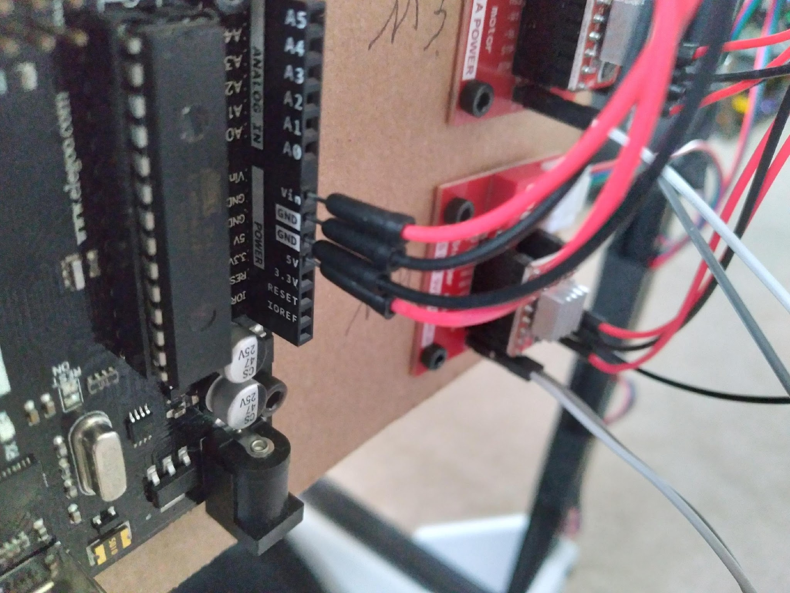
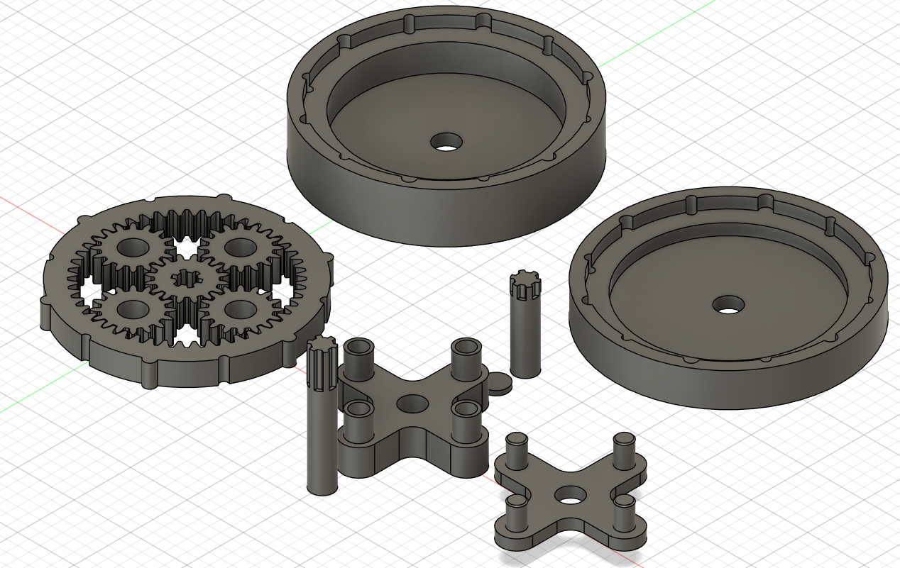
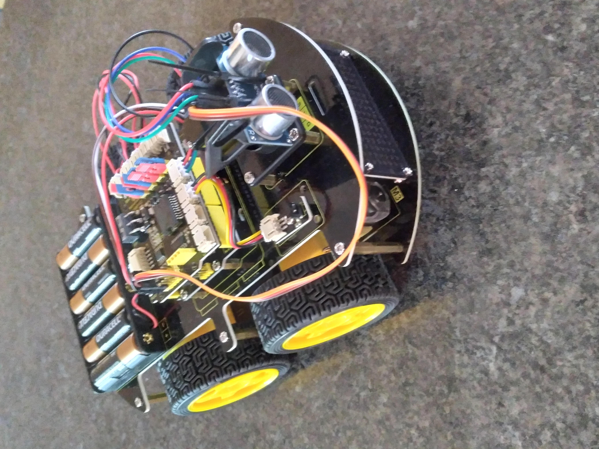

About Me
I’m a mechanical engineer (EIT) with hands-on experience in design, fabrication, and real-world testing. I’ve contributed to a $140M+ infrastructure project as a field engineer and am independently developing real-world mechanical systems for renewable, off-grid power generation. I specialize in making functional systems—designed to work, built to last.
Projects
Cable-Driven 3D Positioning Robot
Designed and built a 3-axis motion platform using stepper motors and cable tensioning. Achieved sub-millimeter repeatability and precise spatial control. Led the design, assembly, control logic, and testing.
Tools Used: SolidWorks, Arduino, Stepper Motors, 3D Printing
3D Printed Planetary Gearbox
Engineered a custom multi-stage planetary gearbox optimized for FDM printing. Designed all gear profiles and tolerances manually, achieving smooth torque transmission and a modular, tool-free assembly.
Tools Used: Fusion 360, FDM 3D Printing, PLA, Manual Tolerance Fitting
Autonomous Robot with Collision Avoidance
Built as part of a robotics course, this robot used ultrasonic sensors, a rotating servo, and Bluetooth integration to perform autonomous obstacle avoidance and manual control via phone commands.
Tools Used: Arduino, C++, Ultrasonic Sensor, Servo, Bluetooth Module
Contact
Email: dawsonlgc@gmail.com
Phone: (907) 341-9755